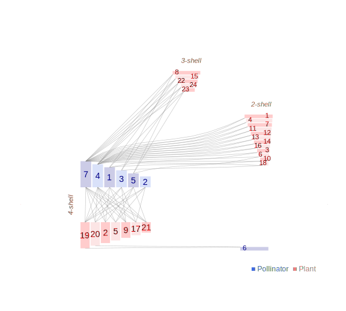

Network: CANGREJOS

Pollinator 1 Macrocoeloma.trispinosum, 2 Amphithrax.aculeatus, 3 Mithraculus.sculptus, 4 Omalacantha.bicornuta, 5 Actaea.bifrons, 6 Neopisosoma.angustifrons, 7DESCONOCIDO
Plant
1 Dicytiota dicothoma, 2 Sphacelaria tribuloides Menghini, 3 Feldmannia indica (Sonder) Womersley & A. Bailey, 4 Feldmannia mitchelliae (Harvey) H. S. Kim, 5 Jania adhaerens J. V. Lamouroux, 6 Lithothamnion floridanum Foslie 1906, 7 Pneophyllum fragile Kützing, 8 Amphiroa fragilissima (Linnaeus) J. V. Lamouroux, 9 Ceramium cimbricum H. E. Petersen, 10 Ceramium sp, 11 Acanthophora spicifera (M. Vahl) Børgesen, 12 Spyridia filamentosa (Wulfen) Harvey, 13 Ochtodes secundiramea (Montagne) M. Howe, 14 Gelidiella transversalis, 15 Gracilaria sp1, 16 Gracilaria sp2, 17 Gracilaria gracilis, 18 Bryopsis plumosa (Hudson) C. Agardh, 19 Chaetomorpha aerea (Dillwyn) Kützing, 20 Cladophora lehmanniana (Lindenberg) Kützing, 21 Cladophora catenata, 22 Rhizoclonium riparium (Roth) Kützing ex Harvey, 23 Batophora oerstedii J. Agardh, 24Ulva flexuosa Wulfen